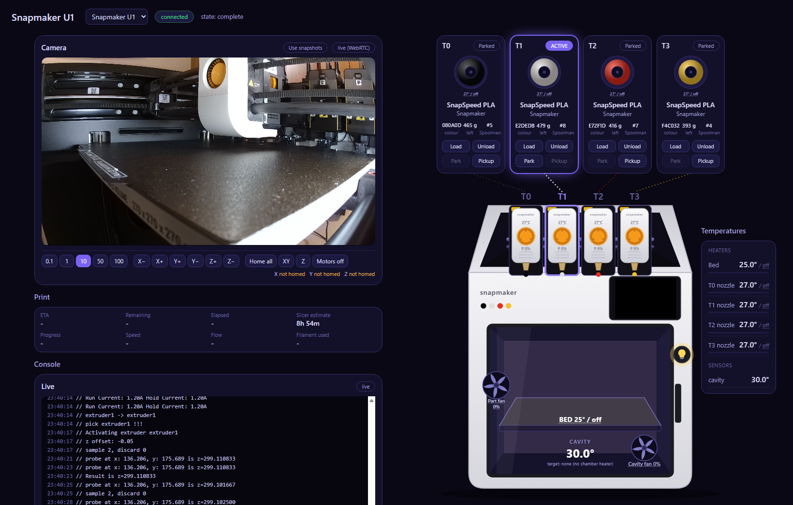
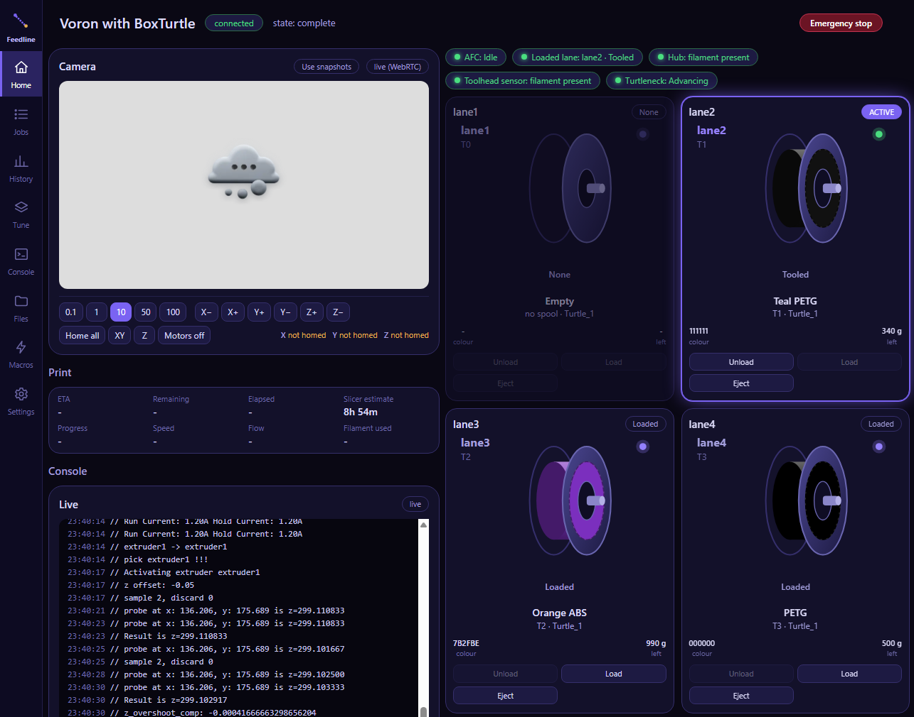
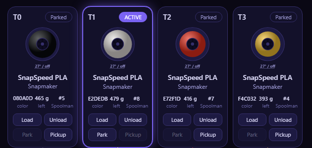
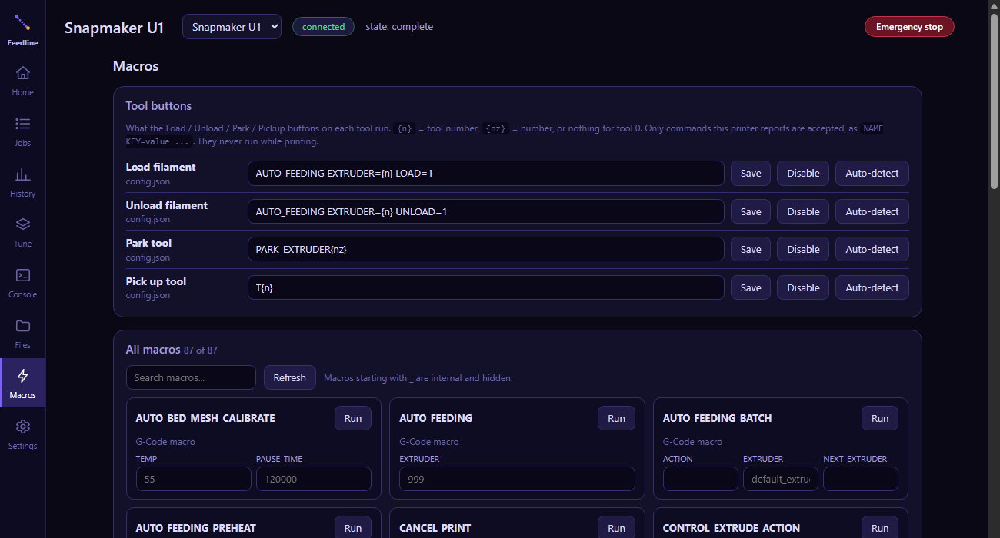
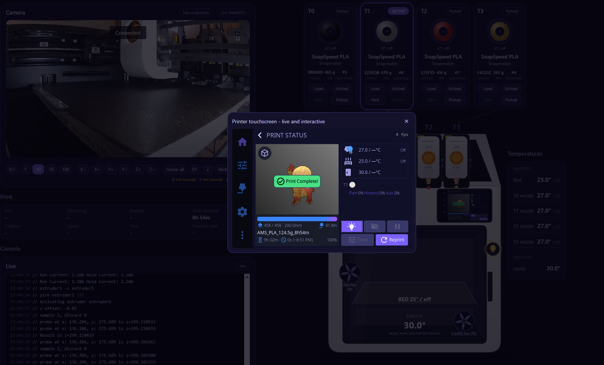
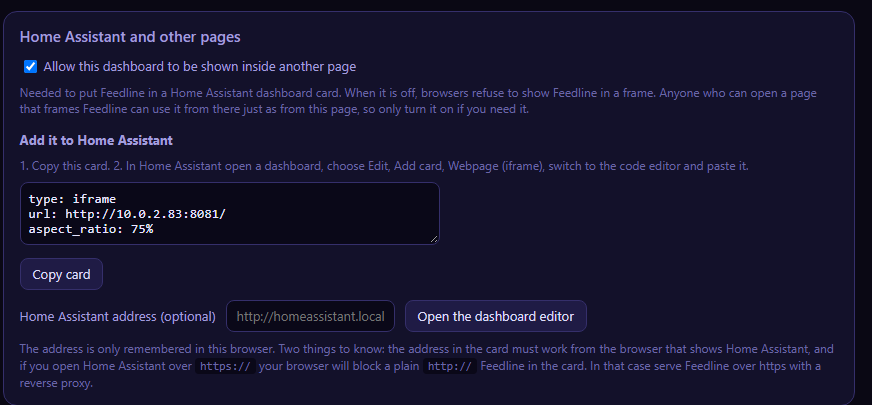

Feedline
FeedlineA Klipper dashboard that draws your printer
One HTML page and a small Python proxy. Live camera, temperatures and toolhead position, filament cards that know your spools, print tuning, bed mesh and a console. Nothing to build, nothing to pip install.

What it does
Works with any Klipper and Moonraker printer. It adapts to what the printer reports instead of asking you to configure everything.
Live drawn printer
The toolhead and bed move as the real ones do. A Snapmaker U1 view plus about 27 other drawn models (QIDI, Creality, Voron, RatRig, Sovol, Elegoo, Anycubic, Flashforge, Prusa, FLSUN), chosen automatically.
Filament systems
Snapmaker U1 RFID tags, AFC / BoxTurtle, QIDI Box, toolchangers (StealthChanger, klipper-toolchanger) or plain extruders. Load, unload, park and pick up from the cards.
Spoolman
Each tool shows its spool, colour and remaining weight. An optional helper adds unknown RFID tags to Spoolman by itself.
Print tuning
Z offset, speed, flow and pressure advance while printing, plus a bed mesh view with a one-tap Calibrate that homes and heats first when needed.
Console and macros
Send G-code, run any macro, edit what the tool buttons run, and browse or edit config files with automatic backups.
Many printers
One instance, an overview page and a per-tab address, so each Home Assistant card can show a different printer.
Phones and tablets
Install it as an app from the browser, or use the Android app for print finished, failed, cancelled and paused notifications.
Home Assistant
A helper builds the card for you. Works over https through a reverse proxy, including the iframe rules Home Assistant enforces.
Careful by design
Allow-listed controls, host checks, a custom header against cross-site posts and a written security review. Run it on a trusted network.
A look around
Screenshots from a Snapmaker U1 and a simulated AFC printer.
Filament lanes
AFC / BoxTurtle shows state pills and one card per lane, with Load, Unload and Eject buttons.

Spoolman on every tool
Colour, material, remaining grams and the spool number, matched from the RFID tag. Tap a card for the full spool details.

Your look, your buttons
Pick the printer picture, toolchanger graphic and spool style independently, and edit what each tool button runs from the Macros tab.

Remote touchscreen
On a U1 with the Paxx firmware, the printer's own screen shows up in the dashboard and can be used from anywhere on your network.

In Home Assistant
Drop it into a dashboard as a card. The settings page generates the card code for you.

Install (Linux, about two minutes)
Any Linux machine with systemd and Python 3.8 or newer that can reach the printer: a Raspberry Pi, a small VM, the same box as Spoolman.
- Get the files and run the installer. Nothing in these lines needs editing.
git clone https://github.com/Squallzz/feedline.git && cd feedline sudo sh install.sh
- Answer one question. The installer asks for your printer's address, checks that Moonraker answers there and only then saves it. It will not accept the README's example address.
- Open it. The installer prints the address at the end:
http://<this machine>:8081/. Settings live in/opt/feedline/config.json.
There is no login. Run Feedline on a trusted network, or put it behind a reverse proxy that does authentication and https. To update later, pull the repository and run sudo sh install.sh again; your config is kept.
Android app
A small wrapper around the dashboard that asks for your Feedline address the first time, keeps a connection for notifications and can start after a reboot.
The project is in the android folder and builds without Gradle (build.ps1). See the README for the steps.
Read more
Full README
Every setting, filament system, Spoolman, Home Assistant, reverse proxy and troubleshooting.
Security review
What is protected, what is accepted by design and what to do about it.
Issues
Found a bug or want another printer drawn? Open an issue.